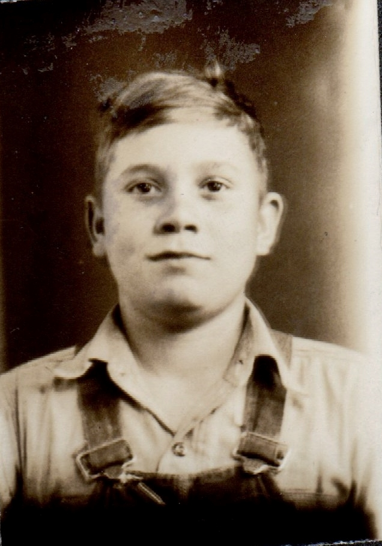
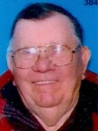

Melvin Charles Dean c1924 - 2017
[ Home ] | [ Calendar ] | [ Surnames Index ] | [ Census Index ] | [ Family History ]The child of Charles Dean and Mabel Davis, Melvin Dean, the fifth cousin once-removed on the mother's side of Nigel Horne, was born in Indiana, USA c. 1924.
During his life, he was living in Lewis, Clay, Indiana on Apr 1, 19301 and on Apr 1, 19402.
He died in 2017.
Parents
- Charles Otha was born on Dec 20, 1889
- Mabel Charlotte was born on May 30, 1906
Citations
- US Census 1930 - Findmypast (was age 5 and the son of the head of the household)
- US Census 1940 - Findmypast (was age 15 and the son of the head of the household)
Media
Melvin Dean

Melvin Charles Dean

Melvin Charles Dean - 2

US Census 1930 - USC/1930/004950597/00346/029
US Census 1940 - USC/1940/1456719737
Family Tree

Generated by ged2site. Last updated on Jun 11, 2024